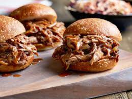

Classic Chili

Ingredients
1/4 cup brown sugar
1 tablespoon chile powder
1 tablespoon paprika
2 teaspoons garlic powder
2 teaspoons kosher salt
1 teaspoon freshly ground black pepper
1 teaspoon cayenne pepper
1 pork shoulder roast (also called pork butt)
4 onions, cut into halves
1 bottle good barbecue sauce and good-quality hamburger rolls, for serving
Steps
- Stir together the brown sugar, chile powder, paprika, garlic powder, salt, black pepper and cayenne in a small bowl. Rub the mixture all over the pork shoulder. Wrap the pork in plastic wrap and refrigerate for several hours or preferably overnight.
- Preheat the oven to 300 degrees F.
- Place the pork in a large pot on a bed of the onion halves. Roast until fork-tender and falling apart, about 7 hours. Remove the pork from the pot and set it on a cutting board. Slice some of the onion.
- Place the pot on the stove over medium-high heat and add 1/2 to 1 cup of hot water. Scrape the pan to loosen up the bits and cook for 5 minutes to reduce. Pour in the barbecue sauce and stir to heat.
- Shred the meat with two forks, add the sliced onions to the pork and then toss in the barbecue sauce until it's coated to your liking! Serve on hamburger rolls.
See More Recipes!